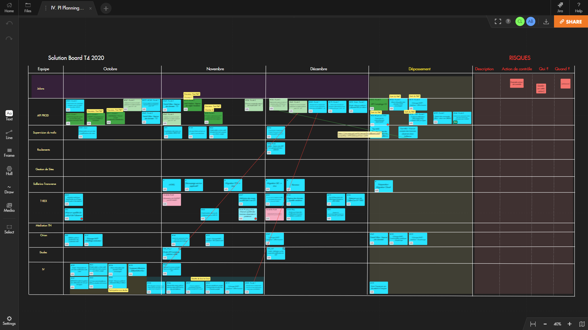
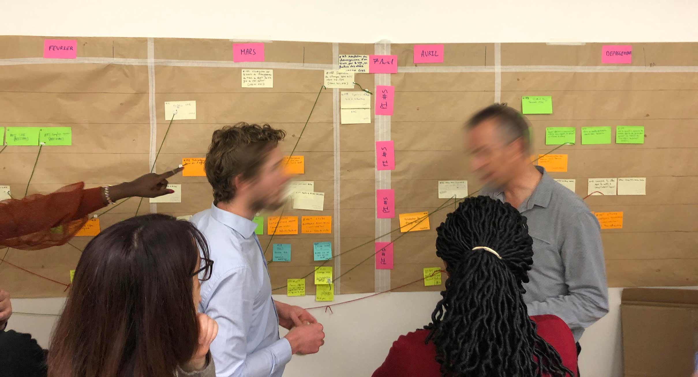
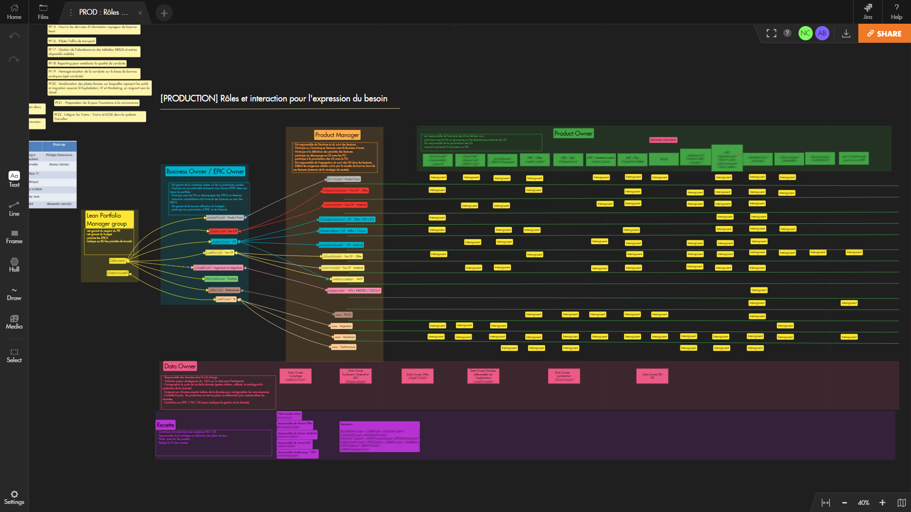

How Transilien customized common Agile-at-scale frameworks to adapt to remote working constraints
Part of the SNCF, France's state-owned railway company, Transilien is the commuter rail network serving Île-de-France: the region surrounding and including the city of Paris. This division employs around 44 000 people and operates 15 train lines, few trams and buses within the region. Two of the lines are co-managed with the RATP, the state-owned rail network serving Paris and its suburbs.
Although Transilien only serves one region in France, its rail network makes up half of the combined distance traveled by all passenger trains in France every day, accounting for 7 out of 10 of the SNCF’s daily passengers (more than 3.5 Millions commuters, and 5200 trains, per day).
In 2016, Transilien’s IT department kicked off an ambitious initiative to adopt Agile methodologies across all of its projects—and to do so within a matter of a few years. Pierre Watier, Manager in charge of Innovation and Agility transformation, has set up a task force team of seasoned experts composed of five Agile Coaches, one Coach in Agile testing, one Organizational Coach, and one Design Thinking Consultant. They work across the 400-person IT department and are tasked with helping teams to choose the right frameworks and implement them in a way that fits their context.
Maxime Bonnet, Agile Coach at CGI, a Canadian global IT consulting and systems integration company, just happens to be one of these people. For the last four years, he has led the charge within the train operation division of Transilien’s IT department.
This division has three key objectives:
- Preparing the network’s train schedule and doing whatever it takes to ensure all trains run on-time as much as possible;
- Handling train maintenance, so that trains are travel-ready at all times; and
- Monitoring traffic across the rail network to provide senior management and other French authorities performance updates throughout the day.

“Our PI Planning process also got senior management more involved…which forced them to take more responsibility and accountability for the trade-offs they suggested making.”
Maxime oversees a program involving 180 employees distributed across 13 different project teams. With the exception of one large team working on an ERP deployment, all project teams follow the Agile framework (Scrum, Kanban, and Extreme Programming).
Each team is made up of five to nine people, including one Product Owner (from the business), one Proxy Product Owner (from the IT department), one Scrum Master, and a few Developers. They work on projects ranging from thick-client application development to data mining and reporting tool development to projects related to their microservice-based infrastructure.
Since implementing Agile frameworks to the team’s day-to-day operations, they have completed a total of eight PI Planning sessions (four in-person and four remote). These occur every three months, with a series of three separate four-week sprints in between each.
Prior to COVID-19, 70 team members would meet live in Paris for a full-day PI Planning once every three months. To avoid needing to dedicate the typical two days required for these types of meetings, they established a best practice to share new features with the entire team at least two weeks in advance of the scheduled PI Planning. This gives all team members an opportunity to estimate the time required to develop and deploy those features and, therefore, come to the session with a clear point of view about how best to approach them.
Streamlining PI Planning in this way allowed all teams present to be more productive by spending the day filling in the Solution Board together. “Our PI Planning process also got senior management more involved and engaged in this work. Allowing them to collaborate with the entire team in this way—and land on important decisions together—forced them to take more responsibility and accountability for the trade-offs they suggested making,” explained Maxime.
“To prevent ‘video conference fatigue,’ we had to find ways of using time and space differently.”
When the first COVID-19 lockdown occurred back in March, there were only three weeks to go before the next PI Planning. The pressure was on to find an immediate solution. But Maxime felt “it would be impossible to keep the full attention of participants during an all-day remote workshop. So to prevent video conference fatigue, we had to find ways of using time and space differently.” This led them to split their typical one-day PI Planning session into a series of several shorter meetings over a two-week period of time.
Two weeks before the first of these shorter PI Planning meetings, features relevant to the next increment are now sent to project teams for consideration and estimation. Each team cuts these features into big user stories to identify the work required to deliver on them. Finally, the teams come together to collaborate on a Project Board, where the user stories are arranged along a simple timeline: sprint 1, sprint 2, sprint 3, and overtime.
On the day before PI Planning officially begins, a ‘speed dating’ process takes place between the Release Train Engineer (RTE)—supported by Agile Coaches—and the Product Owner of each project team. This involves the RTE and Agile Coaches collecting the teams’ Project Boards and summarizing them into a master Solution Board—which makes it easier to visualize dependencies between big user stories across teams and identify potential bottlenecks.
This first version of the Solution Board is finally presented to the epic owner, business owners, and cross-project product managers—who then adjust the features and the Solution Board based on perceived dependencies and bottlenecks. This final version of the Solution Board is then presented by senior management to the entire 180-person team joining the now-remote PI Planning session.“We’ve successfully designed a tailor-made Agile-at-scale framework, inspired mainly by SAFe® but also by LeSS and Scrum-of-Scrum frameworks,” says Maxime.

The challenge of evolving PI Planning in a remote world
Maxime considers himself to be a “sticky-note guy.” He loves how sticky-notes inherently get people more involved and tend to make them more accountable for what they say. This is why he believes that retrospectives have lost their “sense of commitment” after migrating to digital tools. But not everyone always likes using sticky-notes either. This is especially the case among senior managers who oftentimes find them to be a bit childish.
By using a collaborative virtual board like Draft, Maxime has seen a boost in participation during these PI Planning sessions, especially among senior managers. Additionally, it has allowed his teams to document PI Planning better by giving them an easier way to organize and archive all visual management digital artifacts. All in all, the remote PI Planning sessions have become a more satisfying and productive experience for Transilien’s entire IT team. By giving everyone more time to prepare in advance—and to think through features or critical problems deeply—the end result has been a more productive and actionable process than ever before.
However, Maxime underscores that if it hadn’t been for the in-person PI Planning sessions prior to COVID-19, these remote sessions wouldn’t have been as successful. Those in-person experiences created a strong group dynamic and a sense of cohesion that made the transition into remote PI Planning seamless. This is why Maxime hopes that his team will be able to begin doing these sessions in-person again soon—with the help of Draft to streamline the process—to maintain those solid relationships while still driving a high level of efficiency.